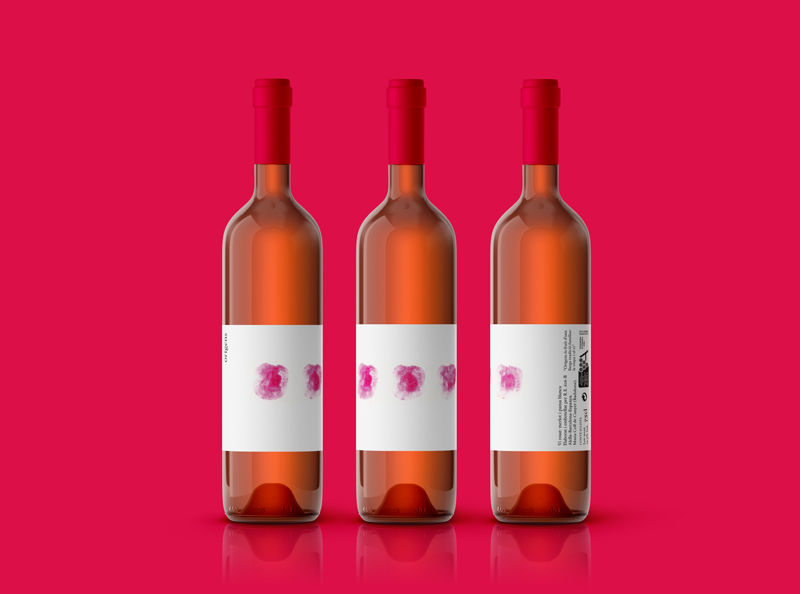

Orígens
Re-branding de la marca de vinos con DO de Alella "Orígens"
Reto
El vino con DO de Alella "Orígens" quería una nueva imagen para su marca, así que para ello se optó por desarrollar una propuesta basada en el elemento principal del vino, la uva.
Solución
Por este motivo, se decidió que nuestra protagonista fuera retratada a través de la mancha de su forma. Asimismo, para establecer una diferenciación entre el vino blanco y el rosado, se escogió el color amarillo y el magenta, respectivamente.

Por lo que respecta a la tipografía, se escogió una serif con remates ligeramente redondeados y curvos que otorgaban esa calidad orgánica que el producto merecía.
Software
- Illustrator
- Photoshop